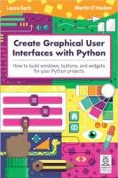

Esta página contiene enlaces a los números publicados de la revista The MagPi Books en 2022 - 2021 - 2020 - 2019 - 2018 - 2017 - 2016 - 2015 - 2014.
Página web: Libros Revista The MagPi

Create Graphical User Interfaces with Python
Número 1 - 2020 octubre
Descarga (PDF 11.3 MB, inglés)